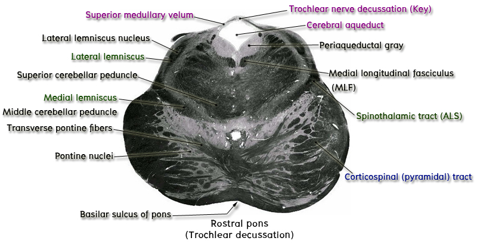

6. ระดับ rostral part of pons หรือระดับ decussation and emergence of the trochlear nerve
Key structure ของระดับนี้ที่ต้องชี้แสดงคือ root fibers of trochlear nerve (CN IV) ซึ่ง decussate กันใน superior medullary velum ซึ่งเป็น roof of fourth ventricle ก่อนที่จะโผล่ออกมาเป็น trochlear nerve ซึ่ง trochlear nerve เป็น cranial nerve เส้นเดียวที่โผล่ออกมาจาก posterior surface ของ brainstem

ให้สังเกต fourth ventricle ซึ่งเริ่มแคบลงเพื่อที่จะกลายเป็น cerebral aqueduct ในส่วนของ midbrain นอกจากนี้ให้ชี้แสดง superior cerebellar peduncle ซึ่งเริ่มจมลงไปใน pontine tegmentum เพื่อไป decussate กันใน caudal midbrain